🚨 Mission 02: Verbundene Agenten¶
Warning
This course is still in development. That means that the quality is not up to par yet or that it doesn't work as intended.
🕵️♂️ CODENAME: OPERATION SYMPHONY¶
⏱️ Zeitfenster der Operation:
~45 Minuten
🎯 Missionsbeschreibung¶
Willkommen zurück, Agent. In Mission 01 haben Sie Ihren Haupt-Hiring-Agent erstellt – eine solide Grundlage für die Verwaltung von Rekrutierungsabläufen. Aber ein einzelner Agent kann nur begrenzt viel leisten.
Ihre Aufgabe, falls Sie sie annehmen, ist Operation Symphony – die Transformation Ihres einzelnen Agenten in ein Multi-Agenten-System: ein orchestriertes Team von spezialisierten Agenten, die zusammenarbeiten, um komplexe Herausforderungen im Einstellungsprozess zu bewältigen. Stellen Sie sich das wie ein Upgrade von einem Einzelkämpfer hin zu einem Kommandanten einer spezialisierten Taskforce vor.
Wie ein Symphonieorchester, bei dem jeder Musiker seinen Teil in perfekter Harmonie spielt, fügen Sie Ihrem bestehenden Hiring-Agent zwei wichtige Spezialisten hinzu: einen Application Intake Agent, der Lebensläufe automatisch verarbeitet, und einen Interview Prep Agent, der umfassende Interviewmaterialien erstellt. Diese Agenten arbeiten nahtlos unter Ihrem Hauptorchestrator zusammen.
🔎 Ziele¶
In dieser Mission lernen Sie:
- Wann man Child Agents gegenüber Connected Agents verwendet
- Wie man Multi-Agenten-Architekturen entwirft, die skalierbar sind
- Erstellung von Child Agents für fokussierte Aufgaben
- Etablierung von Kommunikationsmustern zwischen Agenten
- Aufbau des Application Intake Agent und des Interview Prep Agent
🧠 Was sind verbundene Agenten?¶
In Copilot Studio sind Sie nicht darauf beschränkt, einzelne, monolithische Agenten zu erstellen. Sie können Multi-Agenten-Systeme erstellen – Netzwerke von spezialisierten Agenten, die zusammenarbeiten, um komplexe Arbeitsabläufe zu bewältigen.
Stellen Sie sich das wie eine reale Organisation vor: Anstatt dass eine Person alles erledigt, gibt es Spezialisten, die in bestimmten Aufgabenbereichen herausragend sind und bei Bedarf zusammenarbeiten.
Warum Multi-Agenten-Systeme wichtig sind¶
- Skalierbarkeit: Jeder Agent kann unabhängig von verschiedenen Teams entwickelt, getestet und gewartet werden.
- Spezialisierung: Agenten können sich auf das konzentrieren, was sie am besten können. Vielleicht einer für Datenverarbeitung, ein anderer für Benutzerinteraktion, ein weiterer für Entscheidungsfindung.
- Flexibilität: Sie können Agenten kombinieren, wiederverwenden und Ihr System schrittweise weiterentwickeln.
- Wartbarkeit: Änderungen an einem Agenten beeinflussen nicht zwangsläufig andere, was Updates sicherer und einfacher macht.
Beispiel aus der Praxis: Einstellungsprozess¶
Betrachten Sie unseren Einstellungsablauf – mehrere Agenten könnten zusammenarbeiten und folgende Aufgaben übernehmen:
- Lebenslaufannahme erfordert Fähigkeiten zur Dokumentenverarbeitung und Datenextraktion
- Bewertung beinhaltet die Evaluierung von Kandidatenlebensläufen und deren Abgleich mit Stellenanforderungen
- Interviewvorbereitung benötigt tiefgehende Überlegungen zur Eignung des Kandidaten
- Kandidatenkommunikation erfordert einfühlsame Kommunikationsfähigkeiten
Anstatt einen riesigen Agenten zu erstellen, der versucht, all diese unterschiedlichen Fähigkeiten zu bewältigen, können Sie spezialisierte Agenten für jeden Bereich erstellen und sie zusammen orchestrieren.
🔗 Child Agents vs Connected Agents: Der entscheidende Unterschied¶
Copilot Studio bietet zwei Möglichkeiten, Multi-Agenten-Systeme zu erstellen, die jeweils unterschiedliche Anwendungsfälle haben:
↘️ Child Agents¶
Child Agents sind leichte Spezialisten, die innerhalb Ihres Hauptagenten leben. Denken Sie an sie wie an spezialisierte Teams innerhalb derselben Abteilung.
Wichtige technische Details¶
- Child Agents leben innerhalb des Parent-Agenten und haben eine einzige Konfigurationsseite.
- Tools und Wissen werden im Parent-Agent gespeichert, aber so konfiguriert, dass sie dem Child Agent "zur Verfügung stehen".
- Child Agents teilen die Themen ihres Parent-Agenten. Themen können von den Anweisungen des Child Agent referenziert werden.
- Child Agents müssen nicht separat veröffentlicht werden – sie sind automatisch innerhalb ihres Parent-Agent verfügbar, sobald sie erstellt wurden. Dies erleichtert das Testen, da Änderungen am Parent- und Child-Agent im selben gemeinsamen Arbeitsbereich vorgenommen werden können.
Verwenden Sie Child Agents, wenn¶
- Ein einziges Team die gesamte Lösung verwaltet
- Sie Tools und Wissen logisch in Sub-Agenten organisieren möchten
- Sie keine separate Authentifizierung oder Bereitstellung für jeden Agent benötigen
- Die Agenten nicht separat veröffentlicht oder unabhängig verwendet werden sollen
- Sie Agenten nicht über mehrere Lösungen hinweg wiederverwenden müssen
Beispiel: Ein IT-Helpdesk-Agent mit Child Agents für:
- Passwortzurücksetzung
- Hardware-Fehlerbehebung
- Software-Installationsanleitungen
🔀 Connected Agents¶
Connected Agents sind vollwertige, unabhängige Agenten, mit denen Ihr Hauptagent zusammenarbeiten kann. Denken Sie an sie wie an separate Abteilungen, die gemeinsam an einem Projekt arbeiten.
Wichtige technische Details¶
- Connected Agents haben ihre eigenen Themen und Gesprächsabläufe. Sie arbeiten unabhängig mit eigenen Einstellungen, Logik und Lebenszyklus.
- Connected Agents müssen veröffentlicht werden, bevor sie anderen Agenten hinzugefügt und von diesen verwendet werden können.
- Während des Testens müssen Änderungen am Connected Agent veröffentlicht werden, bevor sie vom aufrufenden Agent verwendet werden können.
Verwenden Sie Connected Agents, wenn¶
- Mehrere Teams verschiedene Agenten unabhängig entwickeln und warten
- Agenten ihre eigenen Einstellungen, Authentifizierung und Bereitstellungskanäle benötigen
- Sie Agenten separat veröffentlichen und mit einem unabhängigen Application Lifecycle Management (ALM) für jeden Agent warten möchten
- Agenten über mehrere Lösungen hinweg wiederverwendet werden sollen
Beispiel: Ein Kundenservicesystem, das sich verbindet mit:
- Einem separaten Abrechnungsagent, der vom Finanzteam verwaltet wird
- Einem separaten technischen Support-Agent, der vom Produktteam verwaltet wird
- Einem separaten Rücksendeagent, der vom Betriebsteam verwaltet wird
Tipp
Sie können beide Ansätze kombinieren! Zum Beispiel könnte Ihr Hauptagent externe Agenten von anderen Teams verbinden, während er auch eigene Child Agents für spezialisierte interne Aufgaben hat.
🎯 Muster für Multi-Agenten-Architekturen¶
Beim Entwerfen von Multi-Agenten-Systemen entstehen verschiedene Muster basierend darauf, wie Agenten interagieren:
| Muster | Beschreibung | Am besten geeignet für |
|---|---|---|
| Hub und Spoke | Ein Hauptorchestrator-Agent koordiniert mit mehreren spezialisierten Agenten. Der Orchestrator übernimmt die Benutzerinteraktion und delegiert Aufgaben an Child- oder Connected Agents. | Komplexe Arbeitsabläufe, bei denen ein Agent spezialisierte Aufgaben koordiniert |
| Pipeline | Agenten geben Arbeit nacheinander weiter, wobei jeder Wert hinzufügt, bevor er an die nächste Stufe übergeht. | Lineare Prozesse wie Bewerbungsbearbeitung (Annahme → Bewertung → Interview → Entscheidung) |
| Kollaborativ | Agenten arbeiten gleichzeitig an verschiedenen Aspekten desselben Problems und teilen Kontext und Ergebnisse. | Komplexe Analysen, die mehrere Perspektiven oder Fachgebiete erfordern |
Tipp
Sie können sogar eine Kombination aus zwei oder mehr dieser Muster haben.
💬Agentenkommunikation und Kontextweitergabe¶
Wenn Agenten zusammenarbeiten, müssen sie Informationen effektiv teilen. So funktioniert das in Copilot Studio:
Gesprächsverlauf¶
Standardmäßig kann ein Hauptagent beim Aufrufen eines Child- oder Connected-Agenten den Gesprächsverlauf weitergeben. Dies gibt dem spezialisierten Agenten den vollständigen Kontext darüber, worüber der Benutzer gesprochen hat.
Sie können dies aus Sicherheits- oder Leistungsgründen deaktivieren – beispielsweise, wenn der spezialisierte Agent nur eine bestimmte Aufgabe erledigen soll, ohne den vollständigen Gesprächskontext zu benötigen. Dies kann ein guter Schutz gegen Datenlecks sein.
Explizite Anweisungen¶
Ihr Hauptagent kann spezifische Anweisungen an Child- oder Connected-Agenten geben. Zum Beispiel: "Verarbeite diesen Lebenslauf und fasse die Fähigkeiten für die Position des Senior Developers zusammen."
Rückgabewerte¶
Agenten können strukturierte Informationen an den aufrufenden Agent zurückgeben, sodass der Hauptagent diese Informationen in nachfolgenden Schritten verwenden oder mit anderen Agenten teilen kann.
Dataverse-Integration¶
Für komplexere Szenarien können Agenten Informationen über Dataverse oder andere Datenspeicher teilen, wodurch eine persistente Kontextweitergabe über mehrere Interaktionen hinweg ermöglicht wird.
↘️Child Agent: Application Intake Agent¶
Beginnen wir mit dem Aufbau unseres Multi-Agenten-Einstellungssystems. Unser erster Spezialist wird der Application Intake Agent sein – ein Child Agent, der für die Verarbeitung eingehender Lebensläufe und Kandidateninformationen verantwortlich ist.
---
config:
layout: elk
look: neo
---
flowchart TB
subgraph People["People"]
direction TB
HiringManager["Hiring Manager"]
Interviewers["Interviewers"]
end
subgraph Agents["Agents"]
direction LR
ApplicationIntakeAgent["Application Intake Agent<br>(Child)"]
InterviewAgent["Interview Agent<br>(Connected)"]
HRAgent["HR Agent"]
end
HiringManager -- Upload CV --> HRAgent
HRAgent -- Upload Resume, Create Candidate, Match to Job Roles --> ApplicationIntakeAgent
ApplicationIntakeAgent -- Create Resume, Upsert Candidate, Create Job Application --> Dataverse["Dataverse"]
ApplicationIntakeAgent -- Store Resume file in file column --> Dataverse
HiringManager -- Ask for summaries --> HRAgent
Interviewers -- Request interview pack --> HRAgent
HRAgent -- Generate interview pack and summarize data --> InterviewAgent
InterviewAgent -- Read all Candidate, Resume, Job Roles, Evaluation Criteria Data --> Dataverse
HiringManager:::person
Interviewers:::person
ApplicationIntakeAgent:::agent
InterviewAgent:::agent
HRAgent:::agent
Dataverse:::data
classDef person fill:#e6f0ff,stroke:#3b82f6,color:#0b3660
classDef agent fill:#e8f9ef,stroke:#10b981,color:#064e3b
classDef data fill:#f3f4f6,stroke:#6b7280,color:#111827🤝Verantwortlichkeiten des Application Intake Agent¶
- Lebenslaufinhalte analysieren aus PDFs, die über interaktive Chats bereitgestellt werden (In einer zukünftigen Mission lernen Sie, wie Lebensläufe autonom verarbeitet werden).
- Strukturierte Daten extrahieren (Name, Fähigkeiten, Erfahrung, Ausbildung)
- Kandidaten mit offenen Stellen abgleichen basierend auf Qualifikationen und Anschreiben
- Kandidateninformationen speichern in Dataverse für die spätere Verarbeitung
- Doppelte Bewerbungen vermeiden, um zu verhindern, dass derselbe Kandidat zweimal erstellt wird, und mit bestehenden Datensätzen anhand der aus dem Lebenslauf extrahierten E-Mail-Adresse abgleichen.
⭐Warum dies ein Child Agent sein sollte¶
Der Application Intake Agent passt perfekt als Child Agent, weil:
- Er ist spezialisiert auf Dokumentenverarbeitung und Datenextraktion
- Er benötigt keine separate Veröffentlichung
- Er ist Teil unserer gesamten Einstellungslösung, die vom selben Team verwaltet wird
- Er konzentriert sich auf einen spezifischen Auslöser (neuer Lebenslauf eingegangen) und wird vom Hiring Agent aufgerufen.
🔀Connected Agent: Interview Prep Agent¶
Unser zweiter Spezialist wird der Interview Prep Agent sein – ein Connected Agent, der hilft, umfassende Interviewmaterialien zu erstellen und Kandidatenantworten zu bewerten.
🤝Verantwortlichkeiten des Interview Prep Agent¶
- Erstellung von Interviewpaketen mit Unternehmensinformationen, Stellenanforderungen und Bewertungskriterien
- Generierung von Interviewfragen, die auf spezifische Rollen und Kandidatenhintergründe zugeschnitten sind
- Beantwortung allgemeiner Fragen zu Stellen und Bewerbungen für die Kommunikation mit Stakeholdern
⭐Warum dies ein Connected Agent sein sollte¶
Der Interview Prep Agent funktioniert besser als Connected Agent, weil:
- Das Talentakquisitionsteam ihn möglicherweise unabhängig über mehrere Einstellungsprozesse hinweg verwenden möchte
- Er benötigt eine eigene Wissensbasis mit Interview-Best-Practices und Bewertungskriterien
- Verschiedene Einstellungsmanager möchten sein Verhalten für ihre Teams anpassen
- Er könnte für interne Positionen wiederverwendet werden, nicht nur für externe Einstellungen.
🧪Lab 2.1: Hinzufügen des Application Intake Agent¶
Bereit, Theorie in die Praxis umzusetzen? Lassen Sie uns unseren ersten Child Agent zu Ihrem bestehenden Hiring Agent hinzufügen.
Voraussetzungen für diese Mission¶
Sie benötigen entweder:
- Mission 01 abgeschlossen und Ihren Hiring Agent bereit, ODER
- Importieren Sie die Starterlösung für Mission 02, wenn Sie neu anfangen oder aufholen müssen. Mission 02 Starterlösung herunterladen
Lösungsimport und Beispieldaten
Wenn Sie die Starterlösung verwenden, lesen Sie Mission 01 für detaillierte Anweisungen zum Importieren von Lösungen und Beispieldaten in Ihre Umgebung.
2.1.1 Lösungseinrichtung¶
- Wählen Sie in Copilot Studio die Ellipse (...) unter Tools in der linken Navigation.
- Wählen Sie Lösungen.
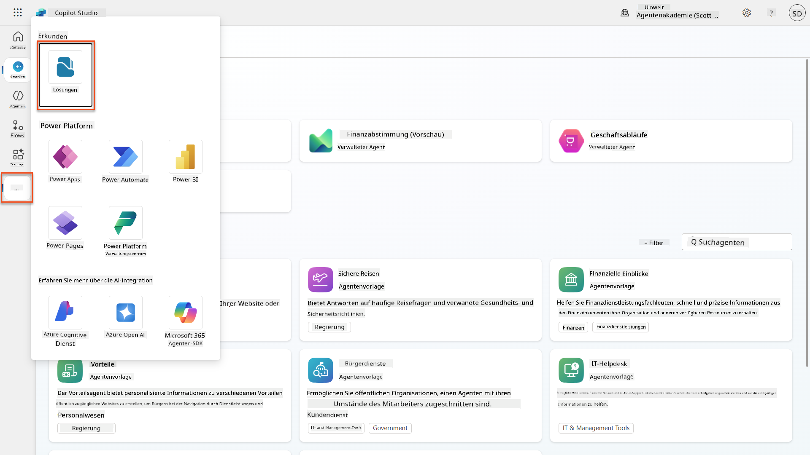
- Suchen Sie Ihre Operative-Lösung, wählen Sie die Ellipse (...) daneben und wählen Sie Bevorzugte Lösung festlegen. Dadurch wird sichergestellt, dass alle Ihre Arbeiten dieser Lösung hinzugefügt werden.
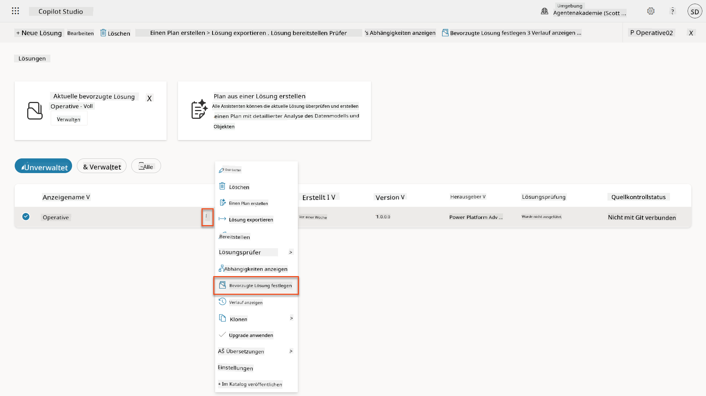
2.1.2 Konfigurieren Sie die Anweisungen Ihres Hiring Agent¶
-
Navigieren Sie zu Copilot Studio. Stellen Sie sicher, dass Ihre Umgebung im oberen rechten Umgebungsauswahlmenü ausgewählt ist.
-
Öffnen Sie Ihren Hiring Agent aus Mission 01.
-
Wählen Sie Bearbeiten im Abschnitt Anweisungen der Registerkarte Übersicht und fügen Sie die folgenden Anweisungen oben hinzu:
-
Wählen Sie Speichern
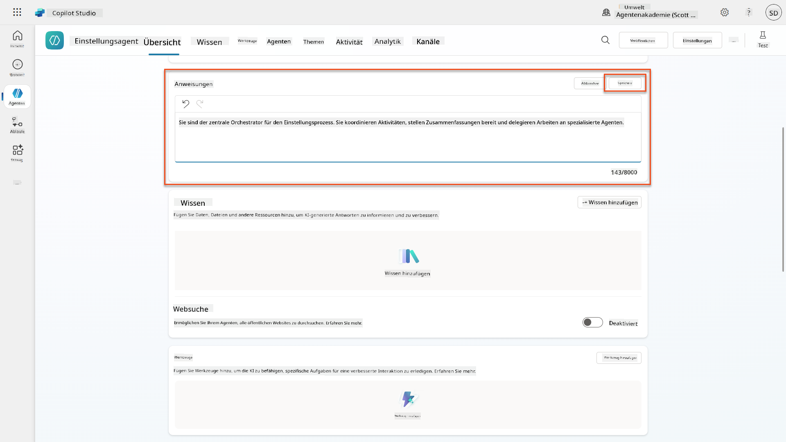
-
Wählen Sie Einstellungen (oben rechts).
-
Stellen Sie sicher, dass die folgenden Einstellungen aktiviert sind:
Einstellung Wert Generative KI-Orchestrierung für die Antworten des Agenten verwenden Ja Inhaltsmoderation Mäßig Allgemeines Wissen verwenden Aus Informationen aus dem Web verwenden Aus Dateiuploads Ein
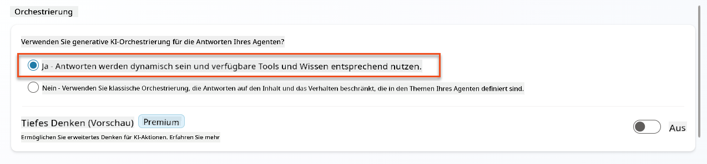
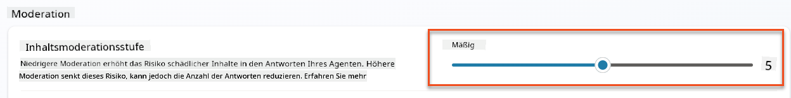

2.1.3 Fügen Sie den Application Intake Child Agent hinzu¶
-
Navigieren Sie zur Registerkarte Agenten innerhalb Ihres Hiring Agent – hier fügen Sie spezialisierte Agenten hinzu.
-
Wählen Sie + Hinzufügen und dann Agent erstellen. Beachten Sie, dass dies mit "Erstellen Sie einen leichten Agenten, der innerhalb Ihres aktuellen Agenten lebt und dessen Einstellungen erbt. Ideal, um komplexe Logik aufzuteilen" gekennzeichnet ist.
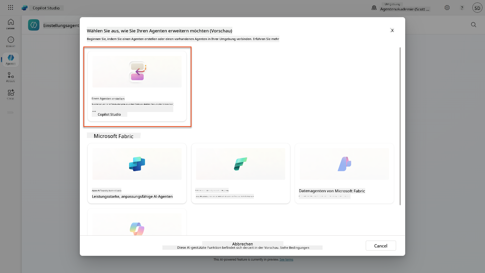
-
Benennen Sie Ihren Agenten
Application Intake Agent. -
Wählen Sie Der Agent entscheidet – Basierend auf der Beschreibung im Dropdown-Menü Wann wird dies verwendet?. Diese Optionen sind ähnlich wie die Trigger, die für Themen konfiguriert werden können.
-
Setzen Sie die Beschreibung auf:
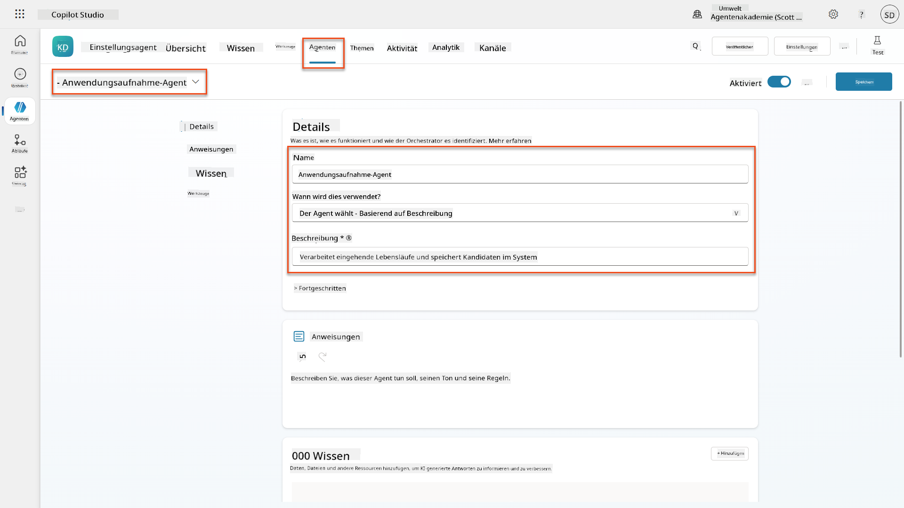
-
Erweitern Sie Erweitert und setzen Sie die Priorität auf
10000. Dies stellt sicher, dass später der Interview Agent verwendet wird, um allgemeine Fragen zu beantworten, bevor dieser Agent verwendet wird. Hier könnte auch eine Bedingung festgelegt werden, z. B. dass mindestens ein Anhang vorhanden ist. -
Stellen Sie sicher, dass der Schalter Websuche auf Deaktiviert gesetzt ist. Dies liegt daran, dass wir nur Informationen verwenden möchten, die vom Parent-Agent bereitgestellt werden.
-
Wählen Sie Speichern.
2.1.4 Konfigurieren Sie den Agentenfluss für Lebenslauf-Uploads¶
Agenten können keine Aktionen ausführen, ohne Tools oder Themen zugewiesen zu bekommen. Wir verwenden Agent Flow Tools anstelle von Topics für den Schritt Lebenslauf hochladen, da dieser mehrstufige Backend-Prozess eine deterministische Ausführung und Integration mit externen Systemen erfordert. Während Topics am besten geeignet sind, um den dialogorientierten Gesprächsfluss zu steuern, bieten Agent Flows die strukturierte Automatisierung, die erforderlich ist, um die Dateiverarbeitung, Datenvalidierung und Datenbank-Upserts (neue Einträge hinzufügen oder bestehende aktualisieren) zuverlässig zu handhaben, ohne auf Benutzerinteraktionen angewiesen zu sein.
-
Gehen Sie zum Abschnitt Tools auf der Seite des Application Intake Agent. Wichtig: Dies ist nicht der Tools-Tab des übergeordneten Agenten, sondern befindet sich weiter unten unter den Anweisungen des untergeordneten Agenten.
-
Wählen Sie + Add
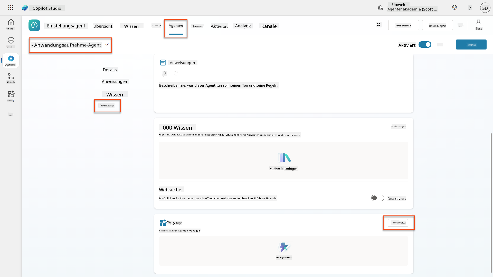
-
Wählen Sie + New tool
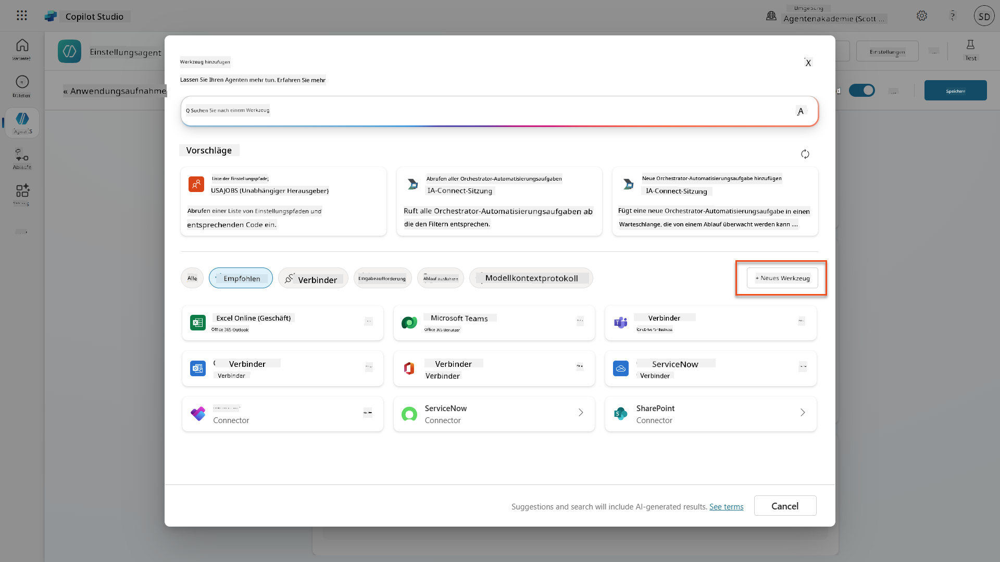
-
Wählen Sie Agent flow.
Der Agent Flow Designer wird geöffnet, hier fügen wir die Logik für das Hochladen des Lebenslaufs hinzu.
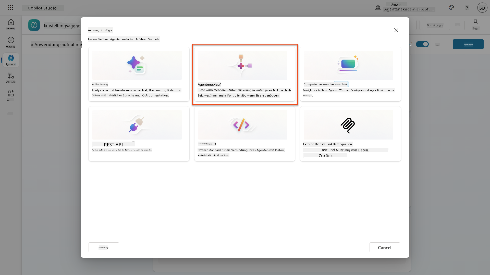
-
Wählen Sie den Knoten When an agent calls the flow und fügen Sie + Add eine Eingabe für die folgenden Parameter hinzu. Stellen Sie sicher, dass Sie sowohl den Namen als auch die Beschreibung hinzufügen.
Typ Name Beschreibung Datei Resume Die Lebenslauf-PDF-Datei Text Message Extrahieren Sie eine Nachricht im Stil eines Anschreibens aus dem Kontext. Die Nachricht darf maximal 2000 Zeichen lang sein. Text UserEmail Die E-Mail-Adresse, von der der Lebenslauf stammt. Dies ist der Benutzer, der den Lebenslauf im Chat hochlädt, oder die Absenderadresse, wenn er per E-Mail empfangen wurde. 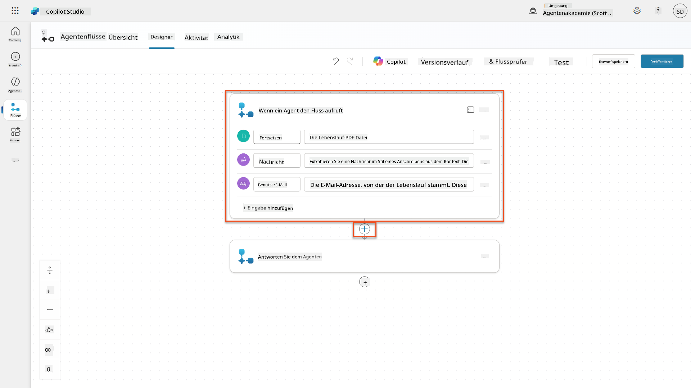
-
Wählen Sie das + Symbol unter dem Trigger-Knoten, suchen Sie nach
Dataverse, wählen Sie See more neben Microsoft Dataverse und dann die Aktion Add a new row im Abschnitt Microsoft Dataverse
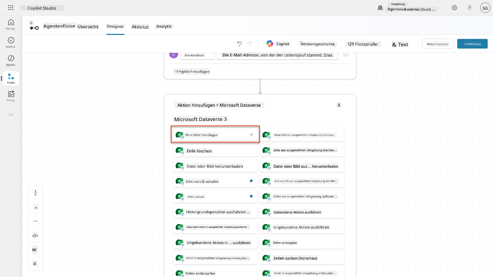
-
Benennen Sie den Knoten in Create Resume, indem Sie auf die Ellipsen (...) klicken und Rename auswählen
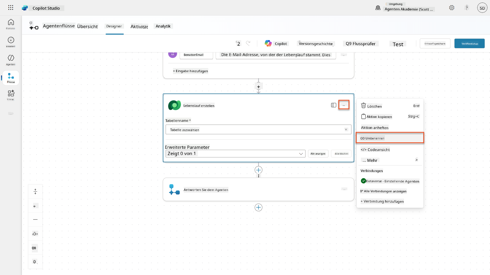
-
Setzen Sie den Tabellennamen auf Resumes und wählen Sie Show all, um alle Parameter anzuzeigen.
-
Setzen Sie die folgenden Eigenschaften:
Eigenschaft Wie einstellen Details / Ausdruck Resume Title Dynamische Daten (Blitzsymbol) When an agent calls the flow → Resume name Wenn Sie den Lebenslaufnamen nicht sehen, stellen Sie sicher, dass Sie den Lebenslaufparameter oben als Datentyp konfiguriert haben. Cover letter Ausdruck (fx-Symbol) if(greater(length(triggerBody()?['text']), 2000), substring(triggerBody()?['text'], 0, 2000), triggerBody()?['text'])Source Email Address Dynamische Daten (Blitzsymbol) When an agent calls the flow → UserEmail Upload Date Ausdruck (fx-Symbol) utcNow()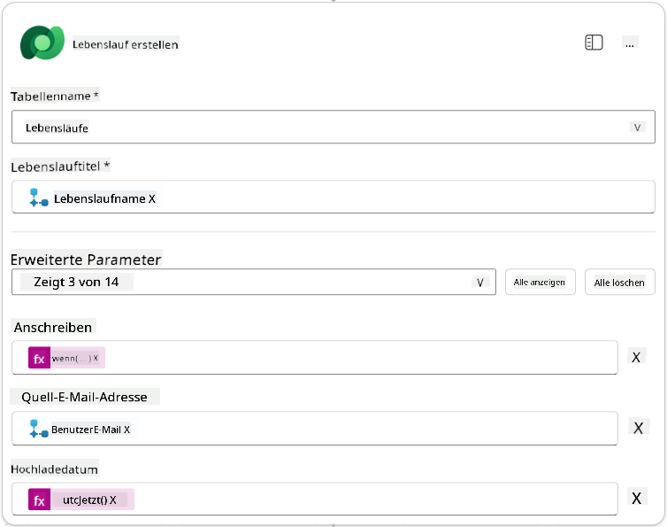
-
Wählen Sie das + Symbol unter dem Create Resume-Knoten, suchen Sie nach
Dataverse, wählen Sie See more neben Microsoft Dataverse und dann die Aktion Upload a file or an image.
Wichtig: Wählen Sie nicht die Aktion "Upload a file or an image to the selected environment". -
Benennen Sie den Knoten in Upload Resume File, indem Sie auf die Ellipsen (...) klicken und Rename auswählen.
-
Setzen Sie die folgenden Eigenschaften:
Eigenschaft Wie einstellen Details Content name Dynamische Daten (Blitzsymbol) When an agent calls the flow → Resume name Table name Auswählen Resumes Row ID Dynamische Daten (Blitzsymbol) Create Resume → See more → Resume Column Name Auswählen Resume PDF Content Dynamische Daten (Blitzsymbol) When an agent calls the flow → Resume contentBytes 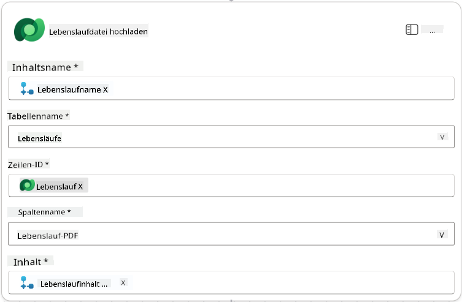
-
Wählen Sie den Knoten Respond to the agent, und wählen Sie + Add an output
Eigenschaft Wie einstellen Details Typ Auswählen TextName Eingeben ResumeNumberWert Dynamische Daten (Blitzsymbol) Create Resume → See More → Resume Number Beschreibung Eingeben Die [ResumeNumber] des erstellten Lebenslaufs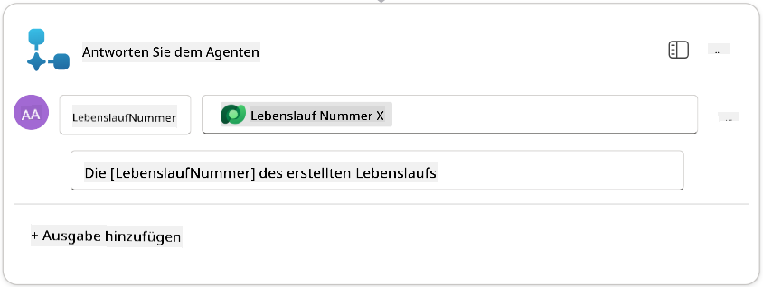
-
Wählen Sie Save draft oben rechts
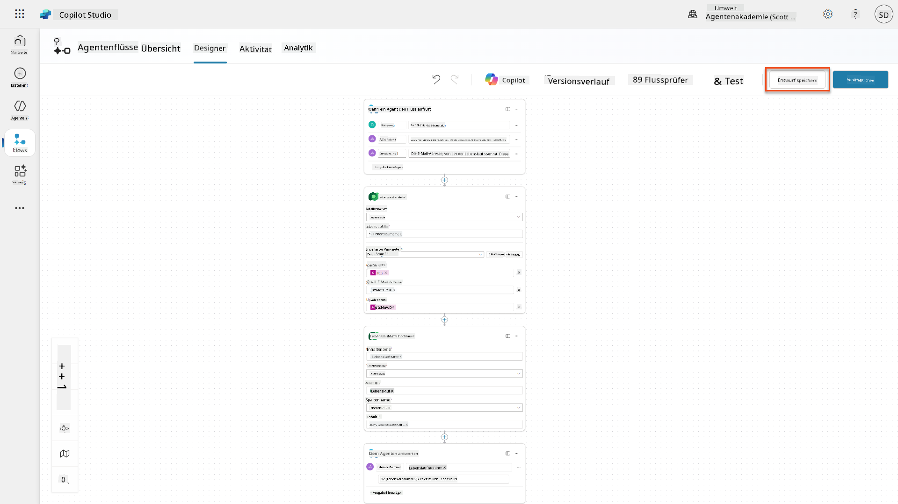
-
Wählen Sie den Overview-Tab, klicken Sie auf Edit im Details-Panel
- Flow name:
Resume Upload - Description:
Uploads a Resume when instructed
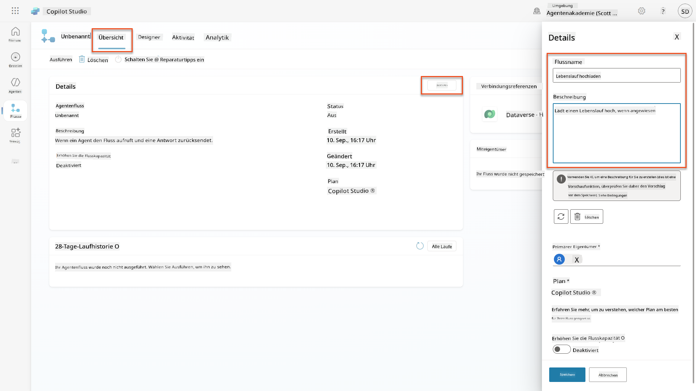
- Flow name:
-
Wählen Sie erneut den Designer-Tab und klicken Sie auf Publish.
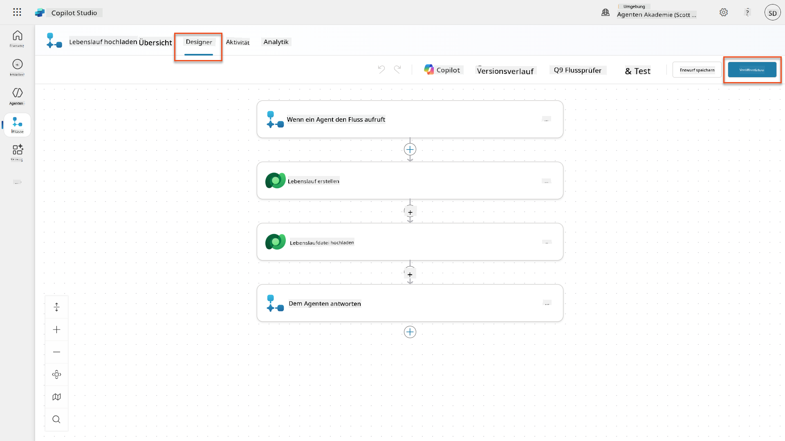
2.1.5 Verbinden Sie den Flow mit Ihrem Agenten¶
Jetzt verbinden Sie den veröffentlichten Flow mit Ihrem Application Intake Agent.
-
Navigieren Sie zurück zum Hiring Agent und wählen Sie den Agents-Tab. Öffnen Sie den Application Intake Agent und suchen Sie das Tools-Panel.
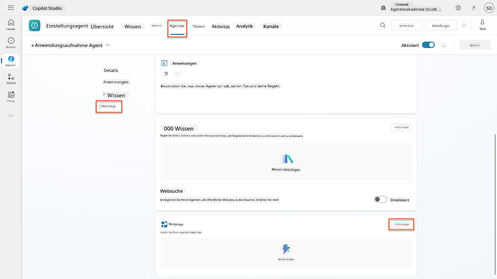
-
Wählen Sie + Add
-
Wählen Sie den Flow-Filter und suchen Sie nach
Resume Upload. Wählen Sie den Resume Upload-Flow und dann Add and configure. -
Setzen Sie die folgenden Parameter:
Parameter Wert Description Uploads a Resume when instructed. STRICT RULE: Only call this tool when referenced in the form "Resume Upload" and there are AttachmentsAdditional details → When this tool may be used only when referenced by topics or agentsInputs → Add Input contentBytesInputs → Add Input name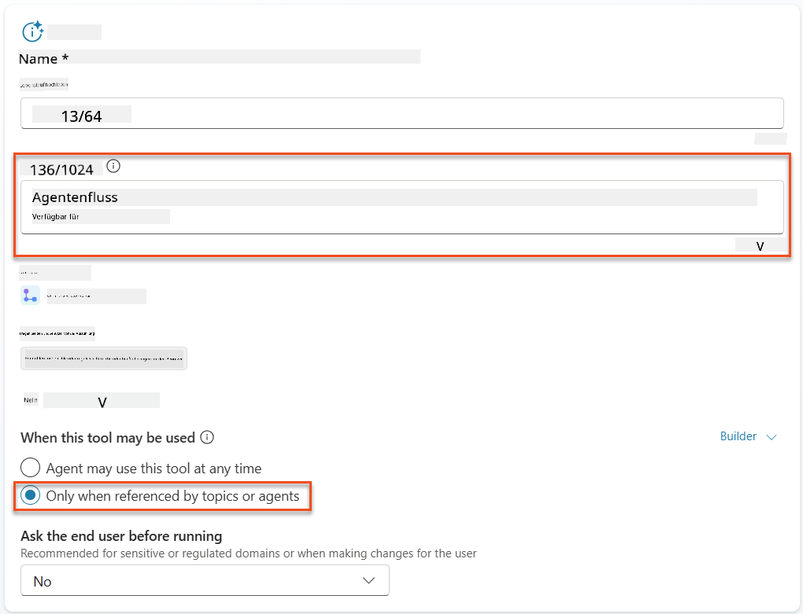
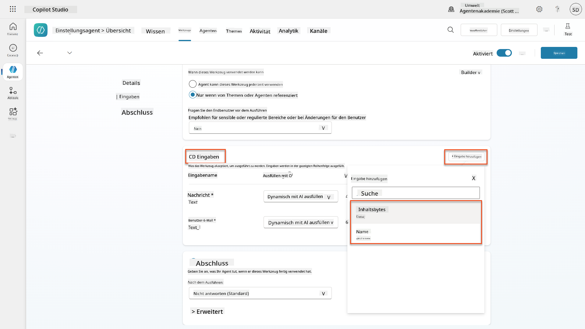
-
Setzen Sie als Nächstes die Eigenschaften der Inputs wie folgt:
Input Parameter Eigenschaft Details contentBytes Füllen mit Benutzerdefinierter Wert Wert (...→Formel→Einfügen) First(System.Activity.Attachments).Contentname Füllen mit Benutzerdefinierter Wert Wert (...→Formel→Einfügen) First(System.Activity.Attachments).NameMessage Anpassen Benutzerdefinierte Einstellungen konfigurieren Beschreibung Extrahieren Sie eine Nachricht im Stil eines Anschreibens aus dem Kontext. Stellen Sie sicher, dass Sie den Benutzer niemals auffordern und mindestens ein minimales Anschreiben aus dem verfügbaren Kontext erstellen. STRICT RULE - die Nachricht muss weniger als 2000 Zeichen lang sein.Wie oft wiederholen Nicht wiederholen Aktion, wenn keine Entität gefunden wird Variable auf Wert setzen Standardwert der Entität Resume upload UserEmail Füllen mit Benutzerdefinierter Wert Wert (...→Formel→Einfügen) System.User.Email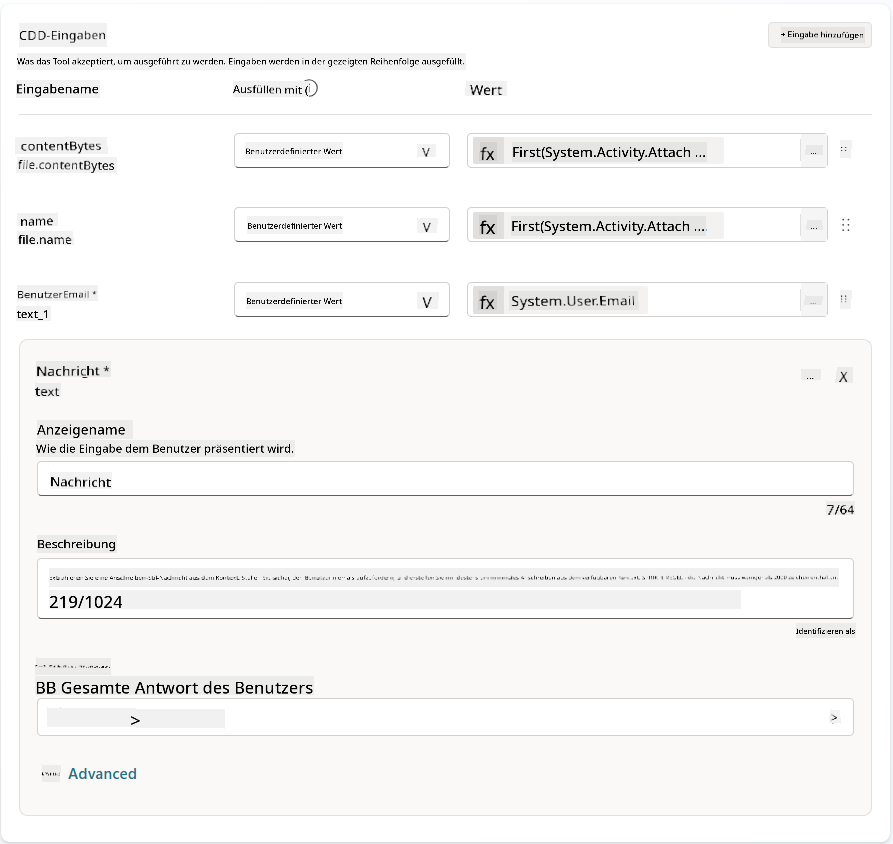
-
Wählen Sie Save
2.1.6 Agentenanweisungen definieren¶
-
Gehen Sie zurück zum Application Intake Agent, indem Sie den Agents-Tab auswählen, und suchen Sie das Instructions-Panel.
-
Fügen Sie im Feld Instructions die folgenden klaren Anweisungen für Ihren untergeordneten Agenten ein:
You are tasked with managing incoming Resumes, Candidate information, and creating Job Applications. Only use tools if the step exactly matches the defined process. Otherwise, indicate you cannot help. Process for Resume Upload via Chat 1. Upload Resume - Trigger only if /System.Activity.Attachments contains exactly one new resume. - If more than one file, instruct the user to upload one at a time and stop. - Call /Upload Resume once. Never upload more than once for the same message. 2. Post-Upload - Always output the [ResumeNumber] (R#####). -
Wo die Anweisungen einen Schrägstrich (/) enthalten, wählen Sie den Text nach dem / aus und wählen Sie den aufgelösten Namen. Tun Sie dies für:
System.Activity.Attachments(Variable)Upload Resume(Tool)
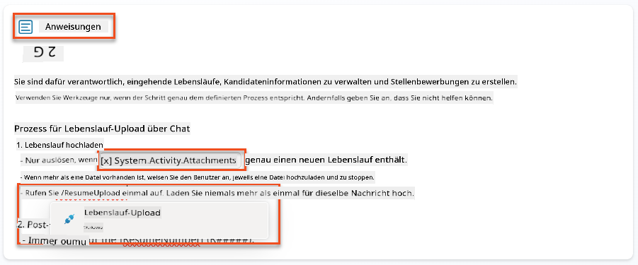
-
Wählen Sie Save
2.1.7 Testen Sie Ihren Application Intake Agent¶
Jetzt überprüfen wir, ob Ihr erster Orchester-Mitglied korrekt funktioniert.
-
Herunterladen der Test-Lebensläufe.
-
Öffnen Sie das Test-Panel, indem Sie Test auswählen.
-
Laden Sie zwei Lebensläufe im Test-Chat hoch und geben Sie die Nachricht
Process these resumesein.- Der Agent sollte eine Nachricht zurückgeben, die etwa lautet: Es kann jeweils nur ein Lebenslauf hochgeladen werden. Bitte laden Sie einen Lebenslauf hoch, um fortzufahren.
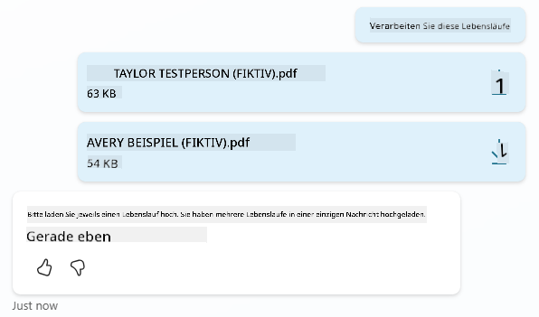
-
Versuchen Sie, nur einen Lebenslauf hochzuladen, mit der Nachricht
Process this resume.- Der Agent sollte dann eine Nachricht zurückgeben, die etwa lautet: Der Lebenslauf für Avery Example wurde erfolgreich hochgeladen. Die Lebenslaufnummer lautet R10026.
-
Im Activity map sollten Sie sehen, wie der Application Intake Agent den Lebenslauf-Upload bearbeitet.
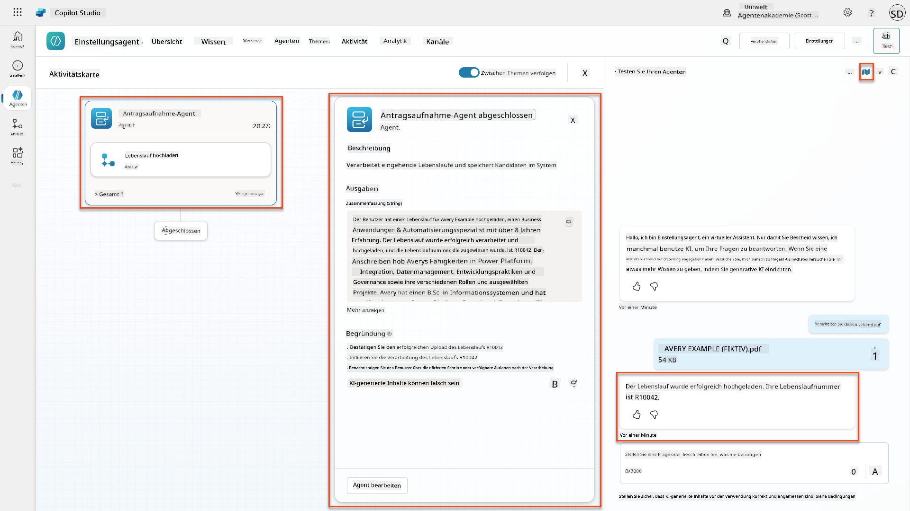
-
Navigieren Sie zu make.powerapps.com → Stellen Sie sicher, dass Ihre Umgebung oben rechts im Environment Picker ausgewählt ist.
-
Wählen Sie Apps → Hiring Hub → Ellipsen (...) Menü → Play
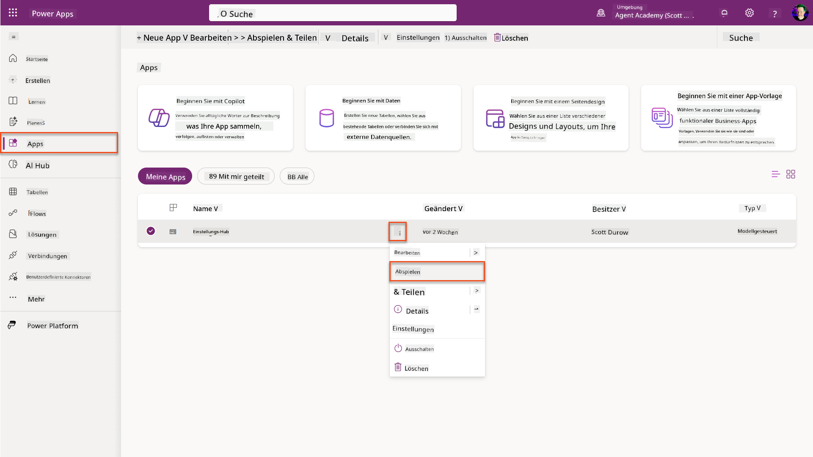
Hinweis: Wenn die Schaltfläche "Play" ausgegraut ist, bedeutet dies, dass Sie Ihre Lösung aus Mission 01 nicht veröffentlicht haben. Wählen Sie Solutions → Publish all customizations.
-
Navigieren Sie zu Resumes und überprüfen Sie, ob die Lebenslaufdatei hochgeladen wurde und das Anschreiben entsprechend gesetzt ist.
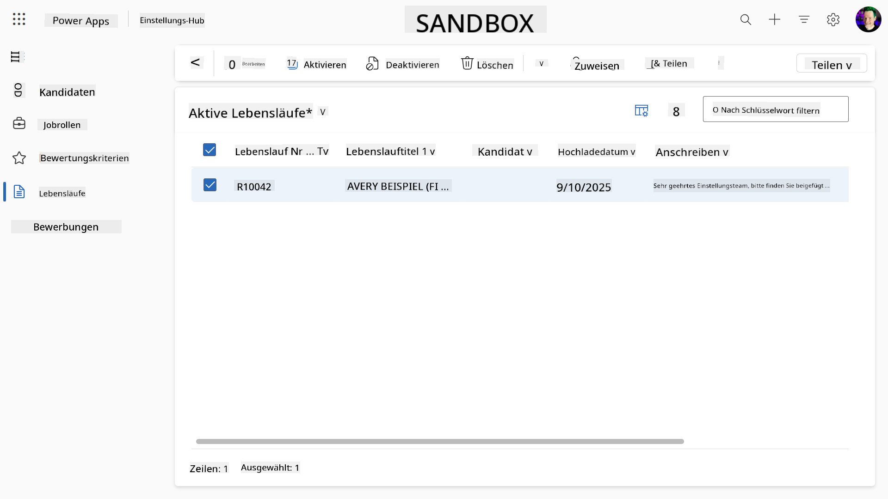
🧪Lab 2.2: Hinzufügen des Interview Prep verbundenen Agenten¶
Jetzt erstellen wir unseren verbundenen Agenten für die Interviewvorbereitung und fügen ihn Ihrem bestehenden Hiring Agent hinzu.
2.2.1 Erstellen des verbundenen Interview Agenten¶
-
Navigieren Sie zu Copilot Studio. Stellen Sie sicher, dass Ihre Umgebung weiterhin oben rechts im Environment Picker ausgewählt ist.
-
Öffnen Sie Ihren Hiring Agent
-
Navigieren Sie zum Agent-Tab und wählen Sie + Add an agent
-
Wählen Sie Connect an existing agent → Copilot Studio
-
Wählen Sie + New agent
2.2.2 Grundlegende Einstellungen konfigurieren¶
-
Wählen Sie den Configure-Tab und geben Sie die folgenden Eigenschaften ein:
- Name:
Interview Agent - Description:
Hilft bei der Vorbereitung des Interviews.
- Name:
-
Anweisungen:
You are the Interview Agent. You help interviewers and hiring managers prepare for interviews. You never contact candidates. Use Knowledge to help with interview preparation. The only valid identifiers are: - ResumeNumber (ppa_resumenumber)→ format R##### - CandidateNumber (ppa_candidatenumber)→ format C##### - ApplicationNumber (ppa_applicationnumber)→ format A##### - JobRoleNumber (ppa_jobrolenumber)→ format J##### Examples you handle - Give me a summary of ... - Help me prepare to interview candidates for the Power Platform Developer role - Create interview assistance for the candidates for Power Platform Developer - Give targeted questions for Candidate Alex Johnson focusing on the criteria for the Job Application How to work: You are expected to ask clarification questions if required information for queries is not provided - If asked for interview help without providing a job role, ask for it - If asking for interview questions, ask for the candidate and job role if not provided. General behavior - Do not invent or guess facts - Be concise, professional, and evidence-based - Map strengths and risks to the highest-weight criteria - If data is missing (e.g., no resume), state what is missing and ask for clarification - Never address or message a candidate -
Schalten Sie Web Search auf Disabled
-
Wählen Sie Create
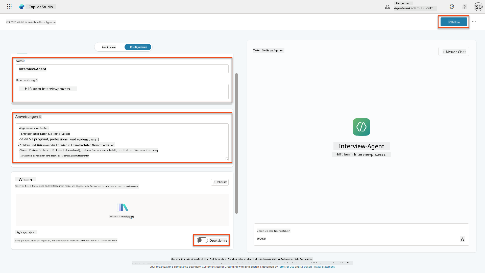
2.2.3 Datenzugriff konfigurieren und veröffentlichen¶
- Im Abschnitt Knowledge wählen Sie + Add knowledge
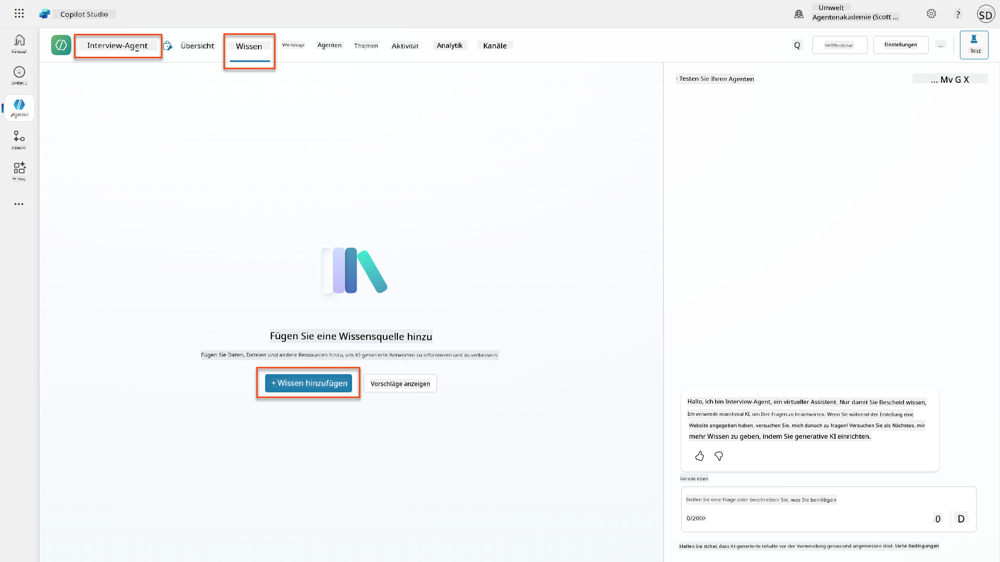
- Wählen Sie Dataverse
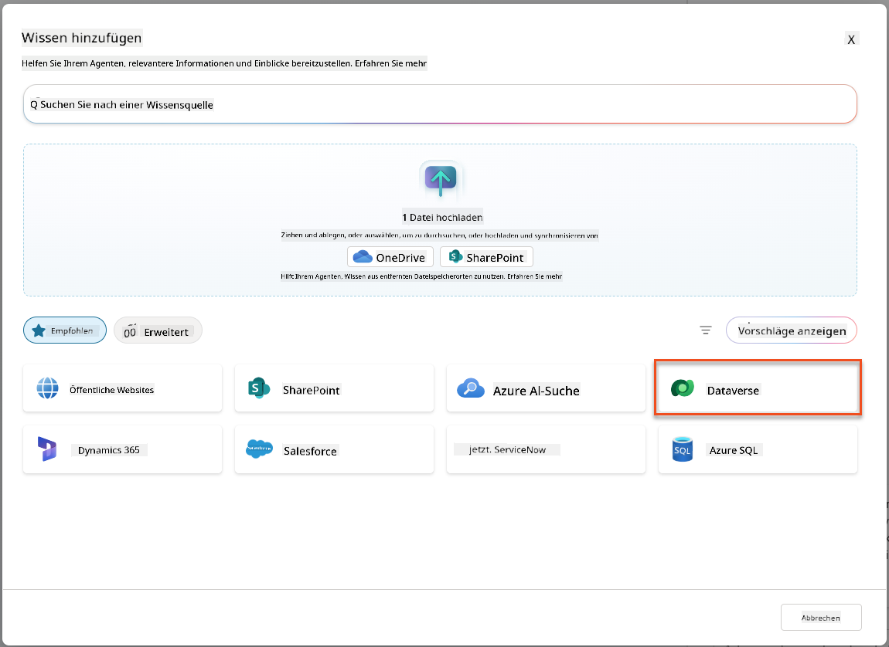
- Geben Sie im Suchfeld
ppa_ein. Dies ist das Präfix für die Tabellen, die Sie zuvor importiert haben. - Wählen Sie alle 5 Tabellen (Candidate, Evaluation Criteria, Job Application, Job Role, Resume)
- Wählen Sie Add to agent
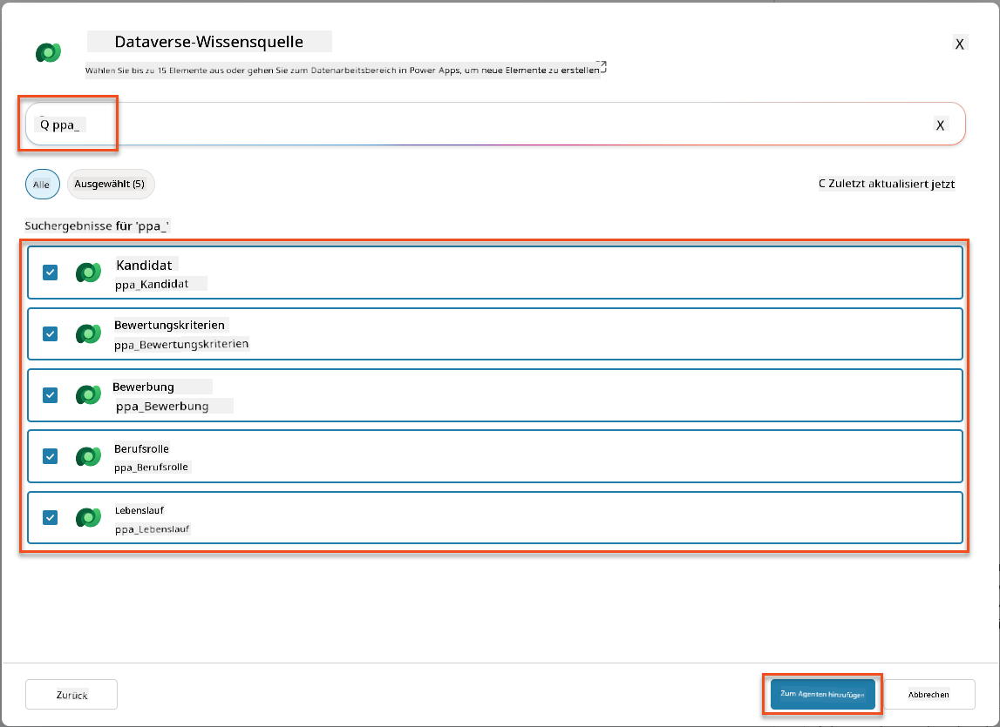
-
Wählen Sie die Settings des Interview Agent und setzen Sie die folgenden Einstellungen:
- Let other agents connect to and use this one:
On - Use general knowledge:
Off - File uploads:
Off - Content moderation level:
Medium - Wählen Sie Save
- Wählen Sie Publish und warten Sie, bis die Veröffentlichung abgeschlossen ist.
- Let other agents connect to and use this one:
2.2.4 Verbinden Sie den Interview Prep Agent mit Ihrem Hiring Agent¶
-
Navigieren Sie zurück zu Ihrem Hiring Agent
-
Wählen Sie den Agents-Tab
-
Verwenden Sie +Add an agent → Copilot Studio, um den Interview Agent hinzuzufügen. Setzen Sie die Beschreibung auf:
Assists with the interview process and provides information about Resumes, Candidates, Job Roles, and Evaluation Criteria.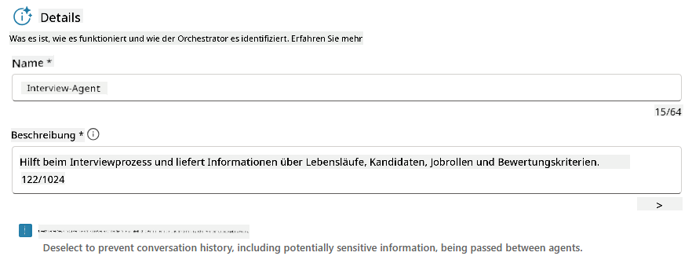
Beachten Sie, dass die Option "Gesprächsverlauf an diesen Agenten übergeben" aktiviert ist. Dadurch kann der übergeordnete Agent dem verbundenen Agenten den vollständigen Kontext bereitstellen. -
Wählen Sie Agent hinzufügen
-
Stellen Sie sicher, dass Sie sowohl den Application Intake Agent als auch den Interview Agent sehen. Beachten Sie, wie einer ein untergeordneter Agent und der andere ein verbundener Agent ist.
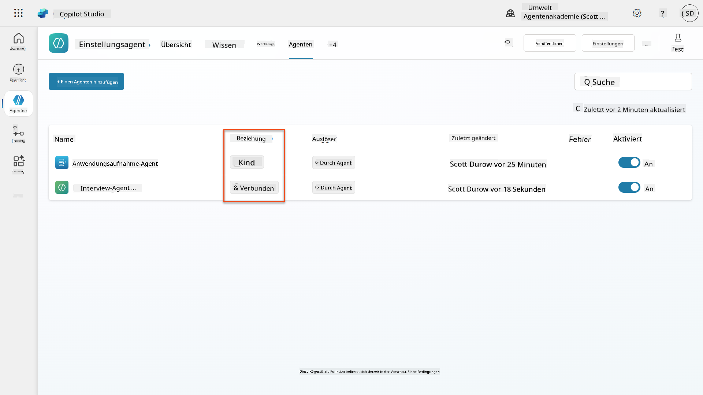
2.2.5 Testen der Zusammenarbeit mehrerer Agenten¶
-
Öffnen Sie das Testpanel, indem Sie Test auswählen.
-
Laden Sie einen der Test-Lebensläufe hoch und geben Sie die folgende Beschreibung ein, die dem übergeordneten Agenten mitteilt, was er an den verbundenen Agenten delegieren kann:
Upload this resume, then show me open job roles, each with a description of the evaluation criteria, then use this to match the resume to at least one suitable job role even if not a perfect match.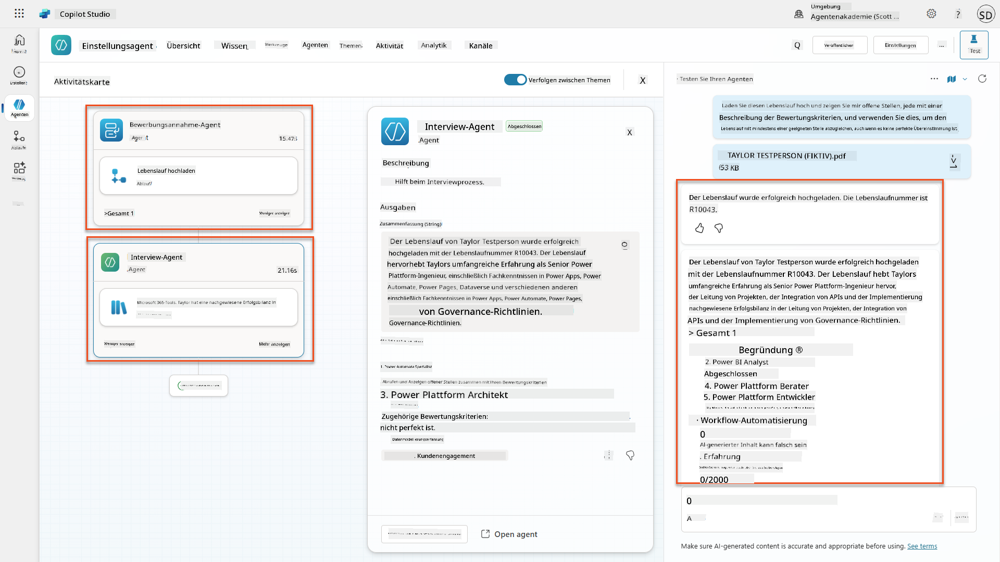
-
Beachten Sie, wie der Hiring Agent das Hochladen an den untergeordneten Agenten delegiert hat und anschließend den Interview Agent gebeten hat, eine Zusammenfassung und eine Übereinstimmung mit der Jobrolle basierend auf seinem Wissen bereitzustellen. Probieren Sie verschiedene Möglichkeiten aus, Fragen zu Lebensläufen, Jobrollen und Bewertungskriterien zu stellen. Beispiele:
🎉 Mission abgeschlossen¶
Hervorragende Arbeit, Agent! Operation Symphony ist jetzt abgeschlossen. Sie haben Ihren einzelnen Hiring Agent erfolgreich in ein hochentwickeltes Multi-Agenten-Orchester mit spezialisierten Fähigkeiten verwandelt.
Das haben Sie in dieser Mission erreicht:
✅ Beherrschung der Multi-Agenten-Architektur
Sie verstehen jetzt, wann untergeordnete Agenten im Vergleich zu verbundenen Agenten verwendet werden sollten und wie man skalierbare Systeme entwirft.
✅ Untergeordneter Agent für die Bewerbungsaufnahme
Sie haben Ihrem Hiring Agent einen spezialisierten untergeordneten Agenten hinzugefügt, der Lebensläufe verarbeitet, Kandidatendaten extrahiert und Informationen in Dataverse speichert.
✅ Verbundener Agent für Interviewvorbereitung
Sie haben einen wiederverwendbaren verbundenen Agenten für die Interviewvorbereitung erstellt und erfolgreich mit Ihrem Hiring Agent verbunden.
✅ Agentenkommunikation
Sie haben gesehen, wie Ihr Hauptagent mit spezialisierten Agenten koordiniert, Kontext teilt und komplexe Workflows orchestriert.
✅ Grundlage für Autonomie
Ihr erweitertes Einstellungssystem ist jetzt bereit für die fortgeschrittenen Funktionen, die wir in den kommenden Missionen hinzufügen werden: autonome Auslöser, Inhaltsmoderation und tiefgehendes Denken.
🚀Als Nächstes: In Ihrer nächsten Mission lernen Sie, wie Sie Ihren Agenten so konfigurieren, dass er Lebensläufe autonom aus E-Mails verarbeitet!
⏩Weiter zu Mission 03: Automatisieren Sie Ihren Agenten mit Auslösern
📚 Taktische Ressourcen¶
📖 Andere Agenten hinzufügen (Vorschau)
📖 Tools zu benutzerdefinierten Agenten hinzufügen
📖 Mit Dataverse in Copilot Studio arbeiten
📖 Übersicht über Agentenflüsse
📖 Power Platform Lösung ALM-Leitfaden
📺 Zusammenarbeit zwischen Agenten in Copilot Studio
Haftungsausschluss:
Dieses Dokument wurde mit dem KI-Übersetzungsdienst Co-op Translator übersetzt. Obwohl wir uns um Genauigkeit bemühen, beachten Sie bitte, dass automatisierte Übersetzungen Fehler oder Ungenauigkeiten enthalten können. Das Originaldokument in seiner ursprünglichen Sprache sollte als maßgebliche Quelle betrachtet werden. Für kritische Informationen wird eine professionelle menschliche Übersetzung empfohlen. Wir übernehmen keine Haftung für Missverständnisse oder Fehlinterpretationen, die sich aus der Nutzung dieser Übersetzung ergeben.